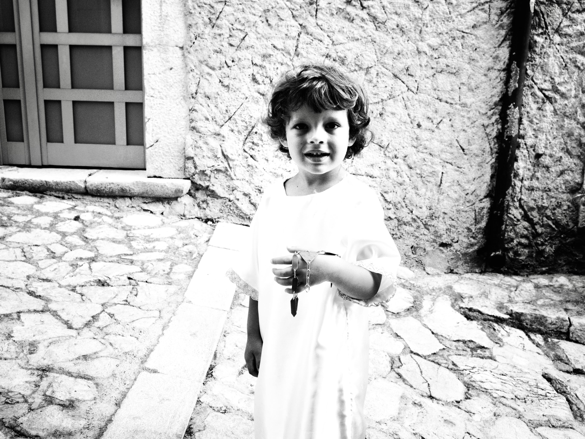
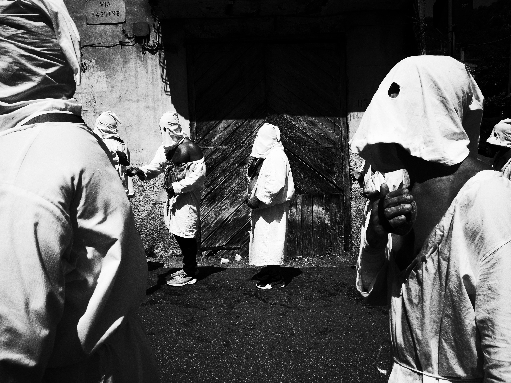
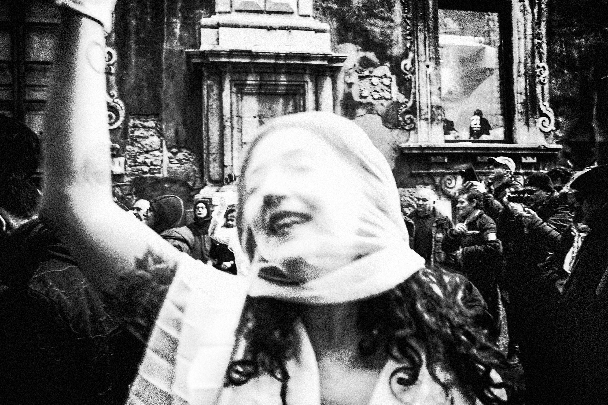

Oltre la Cornice
Beyond Frames is an interactive experience that redefines the relationship between photography, the author, and the viewer. Here, the image is not a finished work to be observed passively, but a starting point to be explored, deconstructed, and freely reassembled. Each intervention generates a new interpretation, transforming the visitor into an active participant in the creative process. In this way, photography transcends the boundaries of its own frame, becoming an open space for dialogue, participation, and sharing, where every gaze can leave its own mark.



